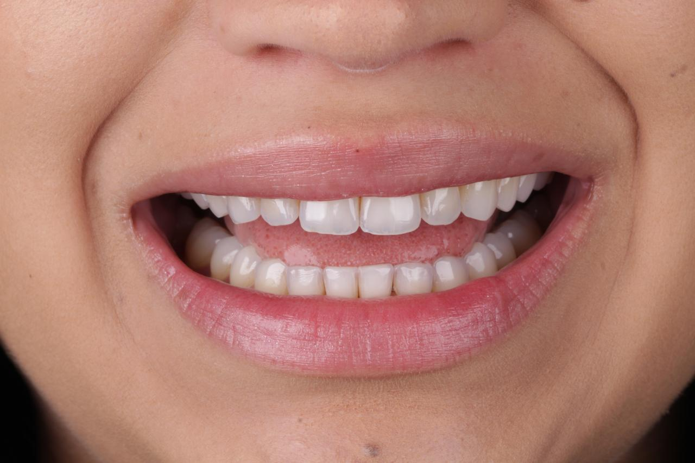
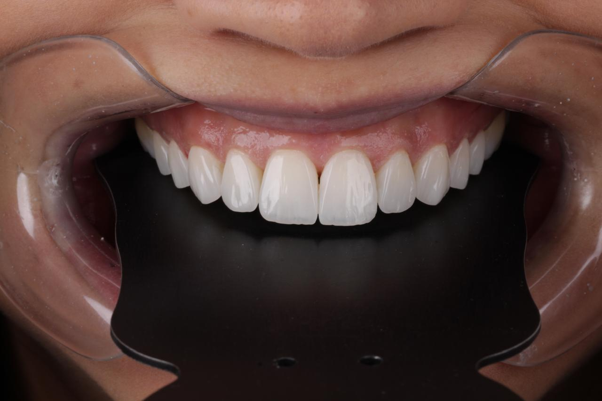
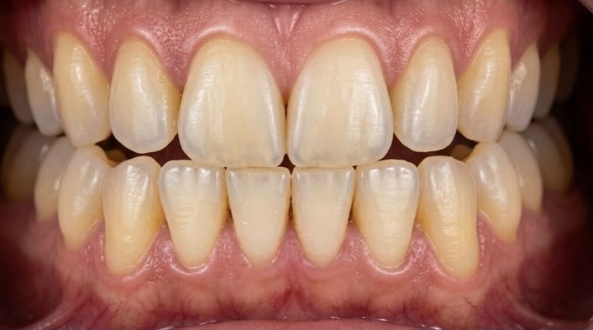
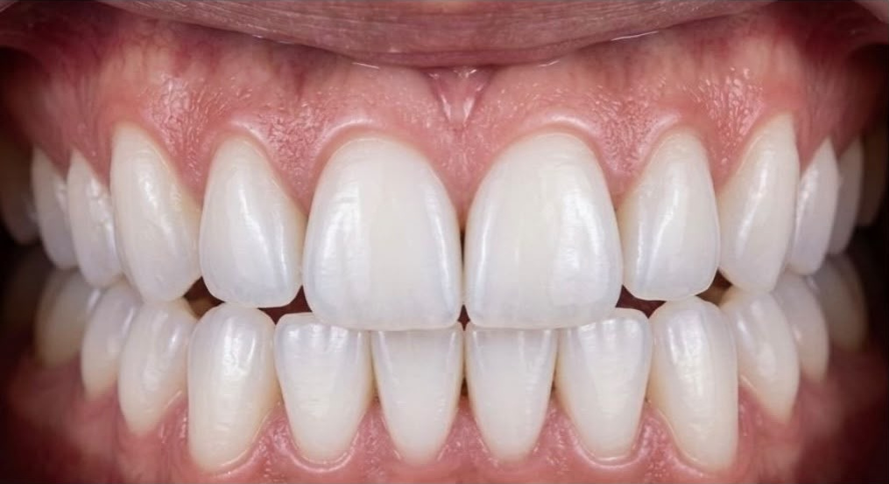

Diagnóstico individual
Mapeamos de maneira individual seu sorriso, para planejarmos o melhor tratamento que una a naturalidade e a autoridade que seu sorriso merece.
Odontologia Estética · Osasco, SP
Dedicado à harmonia e estética dental — transformamos sorrisos com facetas de resina, lentes de porcelana e clareamento dental, revelando a melhor versão do seu sorriso com naturalidade, brilho e elegância.


01 · Sobre
Nosso foco é revelar sua melhor versão — seja através de procedimentos conservadores e pontuais como o clareamento dental, ou de transformações precisas com facetas em resina e lentes de porcelana.
Da primeira consulta ao acabamento final, combinamos rigor técnico, planejamento personalizado e individualizado e acolhimento a cada consulta. Cada caso é avaliado e pensado em seus mínimos detalhes: simetria, textura, cor e formato. Porque acreditamos que a verdadeira elegância está em um sorriso marcante, harmonioso e indiscutivelmente natural.
02 · A técnica
Mapeamos de maneira individual seu sorriso, para planejarmos o melhor tratamento que una a naturalidade e a autoridade que seu sorriso merece.
Definimos juntos qual a melhor indicação para sua transformação, pensando na translucidez, cor, textura, formato e na impressão que queremos transmitir.
A concretização da sua melhor versão. Entregamos um sorriso harmônico, desenhado exclusivamente para você, unindo sofisticação estético-funcional à total preservação da sua saúde bucal. O resultado é a segurança de um sorriso bonito, saudável e preparado para durar.

03 · Resultados






Caso real atendido na clínica. Arraste para comparar o antes e o depois.


04 · Depoimentos
“Desde o planejamento até a entrega foi tudo bem acompanhado, me senti renovada com meu novo sorriso.”
Paciente
“Eu tinha vergonha de sair na rua e sorrir, o Dr. conseguiu mudar isso e hoje consigo sorrir na foto sem nem pensar duas vezes.”
Paciente
“Fiz o planejamento querendo colocar lentes, mas o Dr. me convenceu a fazer clareamento sem sensibilidade e estou amando o resultado, dente branco de maneira natural 😍😍”
Paciente
“Busquei a clínica querendo lente que ninguém percebesse e saí encantada. As pessoas não sabem que eu fiz as lentes e acham que é meu sorriso natural, simplesmente perfeito!”
Paciente
05 · Diferenciais

Preservação em primeiro lugar
Antes da estética, priorizamos a saúde das suas estruturas naturais. Cada plano é desenhado para entregar a maior transformação possível com o menor desgaste necessário, mantendo a integridade e a longevidade dos seus dentes.

Design alinhado à sua essência
Não trabalhamos com moldes padronizados. Analisamos o seu formato facial, sorriso, tom de pele e a mensagem que você deseja transmitir (autoridade, leveza ou sofisticação), criando dentes com translucidez, textura e formato 100% personalizados.

Uma experiência sem receios
Procedimentos estéticos não precisam ser dolorosos. Utilizamos protocolos preparatórios e dessensibilizantes, tanto para o protocolo de clareamento quanto para o preparo de lentes, garantindo um tratamento tranquilo do início ao fim.

Do planejamento à entrega por um só especialista
Sua transformação não é repassada para terceiros. O mesmo profissional responsável pelo seu diagnóstico inicial e análise estética é quem executa, esculpe, acompanha e finaliza cada etapa do seu novo sorriso.
Segurança no resultado e no pós-tratamento
Você participa ativamente das decisões de cor, proporção e formato antes da finalização. Além disso, estruturamos um plano de acompanhamento preventivo para garantir que a saúde, o brilho e a estabilidade das suas lentes/clareamento se sustentem por muito tempo.
06 · Dúvidas
Priorizamos a preservação máxima da sua estrutura dental. No caso das lentes em resina, na maioria das vezes o procedimento é feito de forma totalmente aditiva, sem nenhum desgaste. Para as lentes de porcelana, quando há necessidade de preparo, ele é minimamente invasivo e restrito ao estritamente necessário para garantir a saúde gengival, a adaptação e a durabilidade do trabalho.
Não precisa ser doloroso. Trabalhamos com protocolos modernos de controle de sensibilidade, incluindo a aplicação de dessensibilizantes de alta performance antes e depois do procedimento. Além disso, ajustamos a concentração do gel clareador de acordo com a resposta individual dos seus dentes.
Essa definição acontece na nossa consulta de Diagnóstico Individual. Analisamos seus objetivos, a saúde das suas estruturas dentais, seus hábitos de vida e o grau de alteração de cor ou formato desejado. Se o seu desejo for apenas iluminar o sorriso mantendo o formato natural, o clareamento é a escolha. Caso queira harmonizar forma e textura, fechar espaços ou alterar proporções, indicaremos as lentes em resina ou porcelana.
De forma alguma. Nosso foco é revelar a sua melhor versão com total naturalidade. Trabalhamos com mapeamento de textura, gradiente de cor e translucidez para que as lentes reflitam a luz exatamente como o esmalte dental natural. O objetivo é que as pessoas percebam seu sorriso mais bonito e radiante, sem notar que houve uma intervenção.
O tratamento é planejado para ser completamente confortável e indolor. Buscamos garantir uma experiência tranquila e satisfatória em cada etapa do procedimento.
Você não precisa abrir mão dos alimentos e bebidas de que gosta. Durante o clareamento, orientamos apenas alguns cuidados pontuais. As lentes, especialmente as de porcelana, têm superfície impermeável e altamente resistente a pigmentos. Nas lentes de resina, basta manter uma rotina de higiene adequada e fazer polimentos periódicos no consultório.
Cada procedimento tem um cuidado específico para manter o brilho, a cor e a saúde bucal em dia:
A cor do clareamento se mantém estável por bastante tempo, mas hábitos como café, vinho e cigarro podem trazer de volta pequenos pigmentos. Recomendamos a profilaxia (limpeza) preventiva a cada 6 meses e um retoque simples do clareamento a cada 1 ano, lembrando que cada caso é avaliado individualmente.
Exigem visitas semestrais de controle para polimento e rebrilho. Como a resina é esculpida no consultório, esse polimento periódico remove manchas superficiais e devolve a textura e o brilho originais.
A cerâmica não muda de cor e não absorve pigmentos. A manutenção foca no acompanhamento da saúde gengival, na profilaxia e na checagem da oclusão (mordida) nas consultas de rotina.
Em todos os casos, a higiene diária com fio dental e escova de cerdas macias é fundamental para a longevidade da sua saúde bucal e da estética do seu sorriso.
Ficou alguma dúvida que não está aqui?
Perguntar no WhatsApp07 · Onde nos encontrar